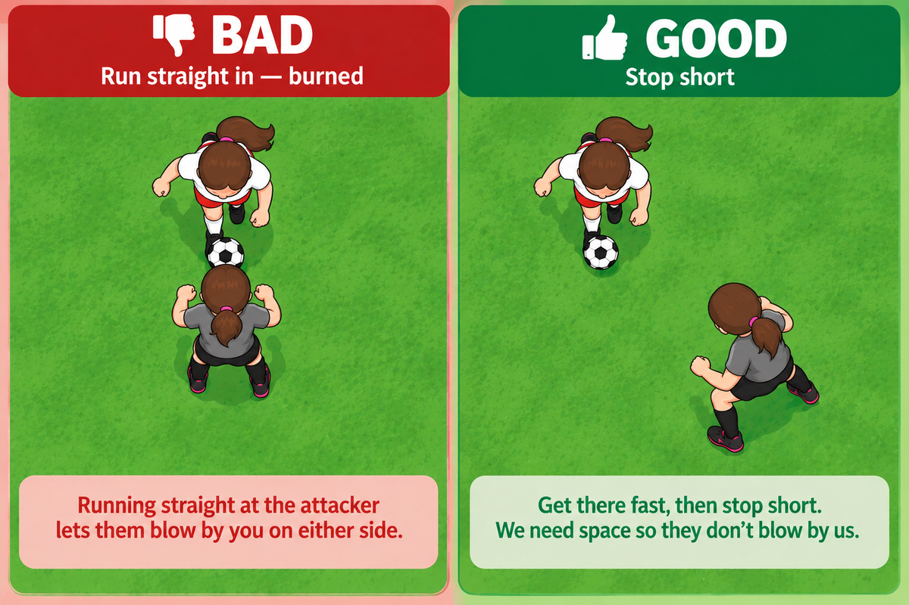
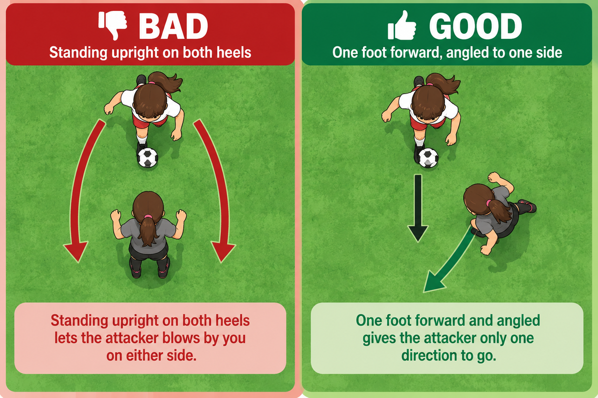
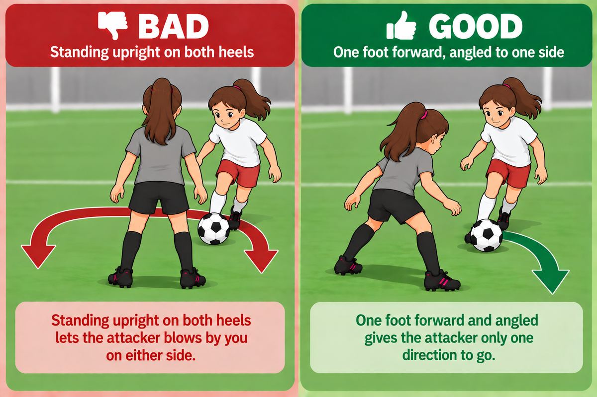
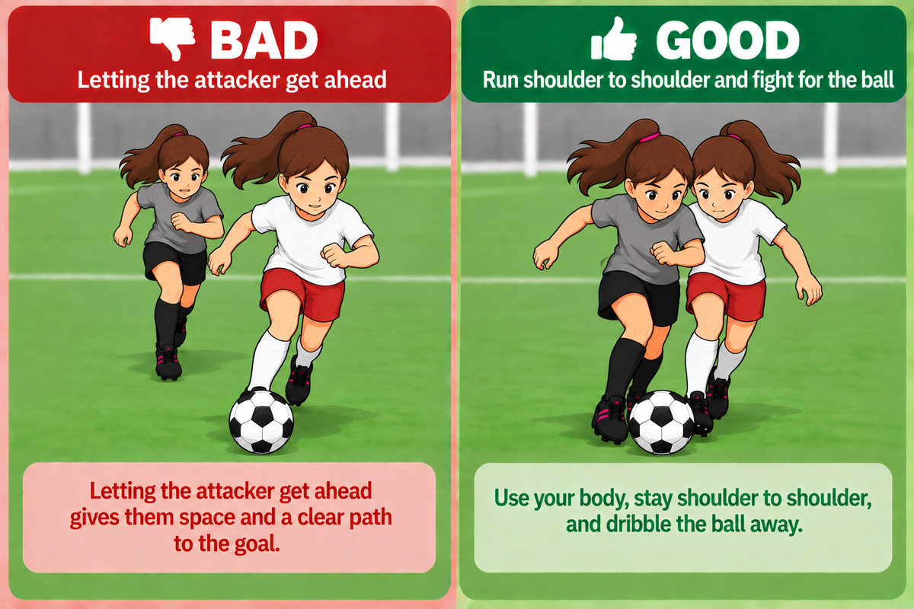

<title>Lesson 03 — One on One Defense</title>
<link rel="preconnect" href="https://fonts.googleapis.com">
<link rel="preconnect" href="https://fonts.gstatic.com" crossorigin>
<link rel="stylesheet" href="https://fonts.googleapis.com/css2?family=Archivo:wght@600;700;800&family=Asap:wght@400;500;600&family=IBM+Plex+Mono:wght@500;600&display=swap">
<link rel="stylesheet" href="../../assets/site.css">
<link rel="stylesheet" href="../../assets/document.css">
<link rel="stylesheet" href="../../assets/print.css">

<header><div class="wrap">
  <div class="topline"><p class="kicker">Lesson 03</p><a class="back" href="../../">&larr; Back Home</a></div>
  <h1>One on One Defense</h1>
  <p class="meta"><span><b>Teaches</b> · containing — how to defend someone dribbling straight at you, on your own</span>
    <span><b>Then</b> · lesson 04, the same job with a partner</span></p>
  <p class="chain">PRESSURE → TURN THEM → RUN TOGETHER</p>
  <p class="footnote">This is <i>Close, Contain, Capitalize</i> - simplified for kids.</p>
</div></header>

<section><div class="wrap">
  <div class="sechead"><h2>1. Pressure</h2></div>
  <p class="lede-p">Close the space fast — then stop before you reach them.</p>
  <figure class="photo-fig">
    
  </figure>
  <div class="says" style="margin-top:18px">
    <div class="say big"><span class="who">The point</span><span class="quote">“Fast to get there. But stop short.”</span>
      <p class="after">If we stop short, that gives us space and time to keep up and force a mistake.</p></div>
    <div class="say big"><span class="who">The gap</span><span class="quote">“Stay one big step away.”</span>
      <p class="after">Close enough to touch them — but don’t. Too far and they go by you; too close and one dribble beats you.</p></div>
  </div>
</div></section>

<section><div class="wrap">
  <div class="sechead"><h2>2. Turn Them</h2></div>
  <p class="lede-p">Give them only one way to go - block off the other.</p>
  <figure class="photo-fig">
    
  </figure>
  <div class="says" style="margin-top:18px">
    <div class="say big"><span class="who">Your feet</span><span class="quote">“Scooter stance.  Like you're starting a race, one foot behind the other.”</span>
      <p class="after">One foot in front, one behind. Show them only one shoulder.</p></div>
    <div class="say big"><span class="who">Where to look</span><span class="quote">“Watch their belly button, not the ball.”</span>
      <p class="after">Feet can trick you. Their hips can’t lie.</p></div>
    <div class="say big"><span class="who">Which way</span><span class="quote">“Send them to the sideline.”</span>
      <p class="after">Stand so one way is easy and one way is hard, and the easy way is always away from the middle.</p></div>
    <div class="say big"><span class="who">Get ready to run</span><span class="quote">“You turn in the direction they are going, so you can run with them.”</span></div>
  </div>
  <p class="note" style="margin-top:16px">If they stop, turn, or go backwards —
  <b>that’s the whole job done.</b> You already won.</p>
</div></section>

<section><div class="wrap">
  <div class="sechead"><h2>3. Run Together</h2></div>
  <p class="lede-p">Now you’re going down the field side by side. Stay with them for as
  long as it takes — and <b>when the ball comes loose, take it and dribble away.</b></p>
  <figure class="photo-fig" style="margin:4px 0">
    
  </figure>
  <figure class="photo-fig">
    
  </figure>
  <div class="says" style="margin-top:18px">
    <div class="say big"><span class="who">While you’re running</span><span class="quote">“Go where they go.”</span>
      <p class="after">Shoulder to shoulder, one step ahead. Use your arms to <strong>swim</strong> past — keep your body in front of theirs.</p></div>
    <div class="say big"><span class="who">When it comes loose</span><span class="quote">“Dribble it away - no kicking or poking.”</span>
      <p class="after">This is the one that kills stabbing, and it does it without a single “don’t”: <b>you cannot dribble away from a stab.</b> A poke sends the ball somewhere random. To come away dribbling you have to arrive under control — which only happens if you waited until the ball was actually loose.</p></div>
    <div class="say big"><span class="who">If it never comes</span><span class="quote">“No ball? You still won.”</span>
      <p class="after">Getting the ball is the bonus, not the job. If you ran with them the whole way and they never got past you, and you slowed them down so others could help, that is a complete piece of defending.</p></div>
    <div class="say big"><span class="who">When it does come</span><span class="quote">“Force a mistake. Then it’s yours.”</span>
      <p class="after">Their position card says the same thing: <i>control the ball — kicking away is a pass to the other team.</i> <b>If you reach, they go past you.</b></p></div>
  </div>
</div></section>

<section><div class="wrap">
  <div class="sechead"><h2>Drills</h2></div>
  <div class="todo">No drills written yet. When <code>work/drills/</code> fills up, the ones
  that serve this lesson land here — starting with <b>The 6-Second Wall</b>, from practice 2.</div>
</div></section>

<footer><div class="wrap footline">Lesson 03 · One on One Defense · 10U<a class="back" href="../../">&larr; Back Home</a></div></footer>

